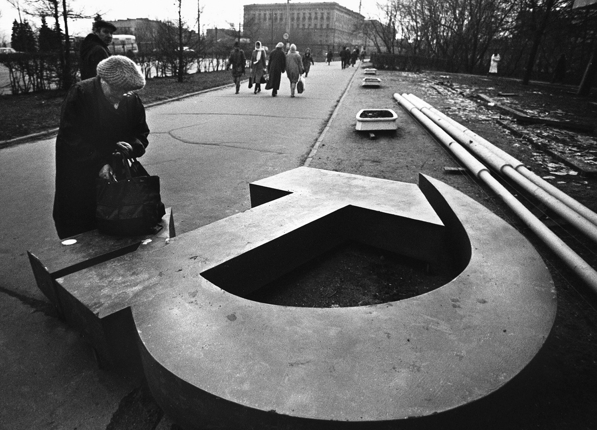

Crise Econômica
“Período Especial”
A crise levou Cuba a passar por uma série de reformas de mercado para tentar, de uma certa maneira, amenizar o caos vivido no país. Com isso houve a legalização do dólar em 1993, que abriu “alas” para o envio de dinheiro daqueles cubanos que haviam saído de Cuba e ido para os Estados Unidos em busca de uma vida melhor, a abertura aos depósitos estrangeiros facilitou a transferência de dinheiro para as famílias que estavam em Cuba, criando um importante retorno de capitais gerados pelo trabalho de cidadãos cubanos.
Denomina-se assim a fase vivida desde 1990 de “período especial em tempos de paz”, trata-se de um período que marca uma séries de reformas rápidas e eficazes na tentativa de conseguir encontrar possibilidades para Cuba sair dessa zona crítica de escassez de mercados e insumos. No campo da agricultura os insumos importados do bloco soviético deixam de ser enviados, e uma grande crise se instala nas fazendas estatais. Data desse período a abertura da ANAP à procura de formas de produção mais independentes e sustentáveis em relação a insumos externos. Hoje Cuba é uma das referências mundiais na área de produção agroecológica.
O investimento em turismo e no setor de serviços tem se ampliado desde então, gerando cada vez mais divisas e oportunidades de empregos. Como destaca Ayerbe “O número de turistas, que em 1986 alcançava os duzentos mil, passa a um milhão e meio em 1999 e a dois milhões em 2003”. No que se refere ao açúcar cubano, fator chave do desenvolvimento rural, e principal gerador de excedente no período da guerra fria, com a queda do bloco soviético perdem-se as vantagens comerciais que o bloco soviético garantia a tal mercadoria de exportação, a ilha depara-se com um mercado mundial de concorrentes fortes.
Para mais informações sobre o movimento agreológico em cuba, recomendamos o seguinte PDF < REVOLUÇÃO AGROECOLÓGICA: O Movimento de Camponês a Camponês da ANAP em Cuba >